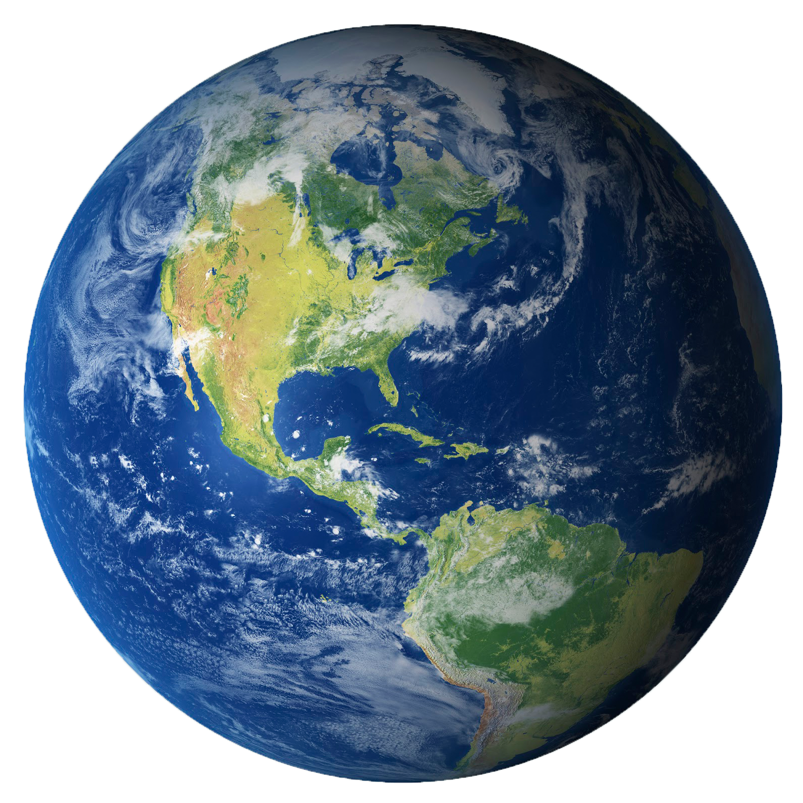
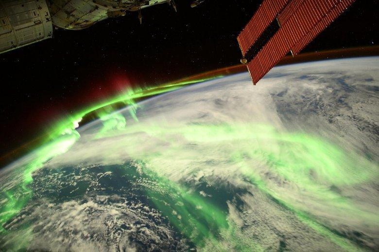

While Earth is only the fifth largest planet in the solar system, it is the only planet in our solar system with liquid water on the surface. Just slightly larger than nearby Venus, Earth is the biggest of the four planets closest to the Sun, all of which are made of rock and metal. Earth is the only planet in the solar system whose English name does not come from Greek or Roman mythology. The name was taken from Old English and Germanic. It simply means "the ground." There are, of course, many names for our planet in the thousands of languages spoken by the people of the third planet from the Sun.
With an equatorial diameter of 7,926 miles (12,756 kilometers), Earth is the biggest of the terrestrial planets and the fifth largest planet in our solar system. From an average distance of 93 million miles (150 million kilometers), Earth is exactly one astronomical unit away from the Sun because one astronomical unit (abbreviated as AU), is the distance from the Sun to Earth. This unit provides an easy way to quickly compare planets' distances from the Sun. It takes about eight minutes for light from the Sun to reach our planet.
Earth takes 365.25 days to orbit the Sun, which is why we have a leap year every four years. The planet rotates on its axis once every 24 hours, which is why we have day and night. Earth is tilted on its axis by 23.5 degrees, which is what causes the seasons.
Earth is the only planet in the solar system with liquid water on the surface. About 71% of Earth's surface is covered by water, mostly oceans. The remaining 29% of Earth's surface is land, which includes continents and islands. Earth's atmosphere is made up of 78% nitrogen, 21% oxygen, and trace amounts of other gases. The atmosphere protects life on Earth by blocking harmful solar radiation and reducing temperature extremes between day and night.
Earth has a solid inner core, a liquid outer core, a viscous mantle, and a solid crust. The inner core is primarily composed of iron and nickel and is about 1,220 kilometers (760 miles) thick. The outer core is also made of iron and nickel but is in a liquid state and is about 2,260 kilometers (1,400 miles) thick. The mantle is made of silicate rocks that are rich in magnesium and iron and extends to a depth of about 2,900 kilometers (1,800 miles). The crust is the outermost layer of the Earth and varies in thickness from about 5 kilometers (3 miles) under the oceans to about 70 kilometers (43 miles) under the continents.

Earth has one natural satellite, the Moon. The Moon is about 1/4 the size of Earth and is located about 384,400 kilometers (238,855 miles) away from Earth. The Moon's gravitational pull affects Earth's tides and stabilizes its axial tilt, which helps maintain a stable climate.
Back to Solar System